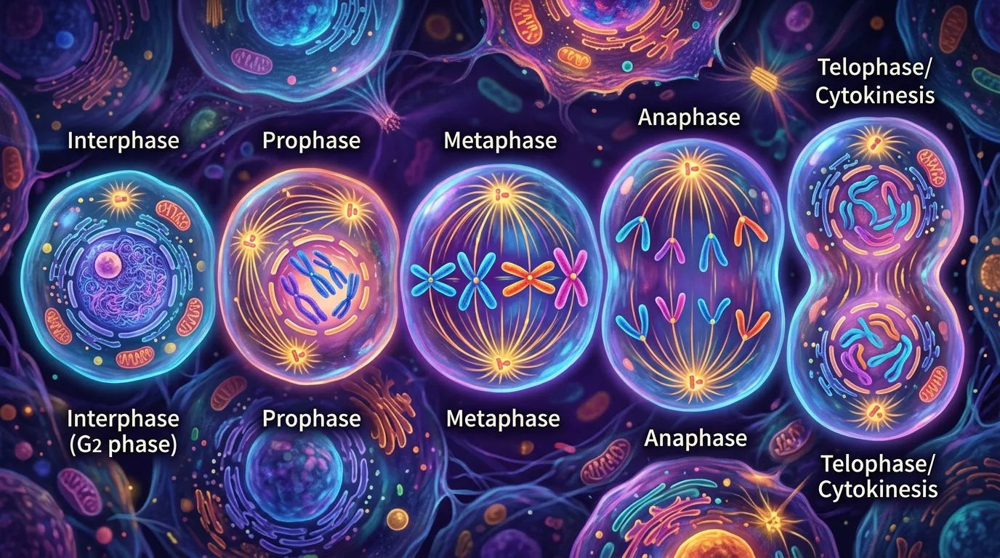

你知道生物体由细胞组成 · 但不清楚细胞如何分裂增殖、染色体如何行动 · 有丝分裂四期（前中后末）让一个细胞变成两个完全相同的子细胞
说出有丝分裂四个时期的名称
描述每个时期染色体的变化特征
判断图片对应分裂哪个时期
在哪个时期，染色体形态最清晰、最适合观察？
已知：你知道生物体由细胞组成
问题：但不清楚细胞如何分裂增殖、染色体如何行动
解法：有丝分裂四期（前中后末）让一个细胞变成两个完全相同的子细胞
有丝分裂后期，着丝点分裂，此时染色体数目如何变化？
有疑问？点击提问！
有丝分裂是真核细胞增殖的主要方式，通过精确的染色体复制与分配，确保遗传物质均等传递到子细胞。例如人体伤口愈合时，周围细胞通过有丝分裂快速增殖填补创口。其核心意义在于维持生物体生长（如儿童身高增长）、组织修复（如皮肤更新）及无性繁殖（如水螅出芽）。一个典型的人类体细胞约经历50次有丝分裂后进入衰老，而癌细胞则因失控的有丝分裂无限增殖。
细胞周期分为G1期（细胞生长）、S期（DNA复制）、G2期（准备分裂）和M期（有丝分裂）。例如洋葱根尖细胞在S期将DNA量从2C增至4C。G1期时长决定细胞命运：神经细胞永久停留在G1期，而小肠上皮细胞每12小时完成一次周期。实验数据显示，常温下蚕豆根尖细胞周期约19小时（G1占5小时，S占7小时），而HeLa癌细胞仅24小时。周期调控异常会导致染色体数目异常，如唐氏综合征。
前期开始于核膜解体前，主要事件包括：①染色质螺旋化形成显微镜下可见的染色体（如人类23对棒状染色体）；②中心体向两极移动并形成纺锤体微管。以蝾螈淋巴细胞为例，此时每条染色体含两条并列的姐妹染色单体，通过着丝粒相连。特殊情况下，化疗药物紫杉醇通过稳定微管抑制纺锤体功能，从而阻断癌细胞分裂。此阶段若中心体复制异常，可能导致三极纺锤体形成。
中期标志是染色体在纺锤丝牵引下整齐排列在赤道板上。教学实验中，用醋酸洋红染色的蝗虫精巢细胞可清晰观察到这一现象。此时每条染色体的动粒（着丝粒蛋白复合体）与来自两极的纺锤丝相连，形成双向拉力。例如人类细胞中46条染色体共形成460个微管连接点。临床产前检查通过分析中期染色体形态进行核型分析，可检测21三体等异常。此阶段若纺锤丝附着错误会导致染色体分离异常。
后期启动的关键是黏连蛋白被分离酶切割，导致姐妹染色单体在纺锤丝牵引下移向两极。以果蝇胚胎为例，此时原本4C的DNA均等分配为两个2C的子细胞组。实验表明，施加秋水仙素可抑制微管组装，使细胞停滞在中期。特殊案例是酵母菌的染色体分离速度达1μm/分钟，而人类细胞仅0.02-0.05μm/分钟。此过程消耗大量ATP，若能量供应不足会导致染色体滞后（lagging chromosome）。
末期特征包括：①染色体解螺旋重新形成染色质；②核膜围绕染色体组重建；③动物细胞通过收缩环（肌动蛋白纤维）形成分裂沟。植物细胞因有细胞壁，通过高尔基体囊泡在赤道板处形成细胞板。例如洋葱根尖细胞分裂时，细胞板由中间向四周扩展直至与母细胞壁融合。若胞质分裂失败会产生多核细胞，如骨骼肌细胞就是通过该机制形成多核合胞体。
细胞周期受CDK-cyclin复合物精确调控：G1期（cyclin D-CDK4/6）、S期（cyclin E/A-CDK2）、M期（cyclin B-CDK1）。实验显示注射MPF（促成熟因子）可使未成熟卵母细胞提前进入M期。关键检查点包括：G1/S检查点（检测DNA损伤）、纺锤体组装检查点（SAC）。例如p53蛋白在DNA损伤时阻滞G1期，而癌症患者常出现p53基因突变。温度敏感型酵母突变体帮助科学家发现了超过50个周期调控基因。
医疗领域：①化疗药物长春碱通过抑制微管功能阻断癌细胞分裂；②干细胞移植依赖有丝分裂扩增细胞数量。农业上利用秋水仙素诱导多倍体（如无籽西瓜染色体从2n=22变为4n=44）。实验室中，胸腺嘧啶类似物BrdU标记法可追踪S期细胞。最新研究发现，某些蜥蜴断尾再生时，软骨细胞通过特殊的有丝分裂在24小时内增殖50倍。这些应用都建立在对有丝分裂机制的深入理解基础上。
纺锤体是由微管组成的临时性细胞结构，在有丝分裂前期由中心体发出。动物细胞中，两个中心体向两极移动并形成纺锤体微管，植物细胞则由两极的微管组织中心直接形成。纺锤体微管分为三种：动粒微管连接染色体着丝粒，极性微管在两极间延伸，星体微管向外辐射。例如在人体细胞分裂时，纺锤体就像‘分子绳索’精准牵引染色体，若纺锤体异常会导致唐氏综合征等染色体疾病。实验室中常用秋水仙素破坏纺锤体来制作染色体标本。
动物细胞通过收缩环机制完成胞质分裂：肌动蛋白和肌球蛋白在细胞中部收缩形成分裂沟，如同‘收缩橡皮筋’最终将细胞一分为二，这个过程需要ATP供能。而植物细胞因有细胞壁，通过高尔基体分泌囊泡在赤道板形成细胞板，逐渐扩展为新的细胞壁。例如洋葱根尖细胞分裂时，可见到明显的细胞板结构。有趣的是，某些藻类会同时出现动物型和植物型分裂方式，这为研究进化提供了线索。实验室中观察蛙卵的卵裂过程能清晰看到收缩环作用。
['1. 为什么伤口愈合过程中需要细胞进行有丝分裂？', '2. 你能列举细胞周期中DNA含量发生变化的阶段吗？', '3. 观察洋葱根尖细胞切片时，如何区分处于不同分裂时期的细胞？']
['1. 若某细胞在S期发生DNA损伤却继续分裂，可能导致什么后果？', '2. 比较动植物细胞在有丝分裂末期的主要差异', '3. 设计实验验证温度对细胞周期时长的影响（写出关键步骤）']
常见错因包括：①误区认为姐妹染色单体是不同染色体（实为同一染色体复制产物）；②混淆染色体与染色质形态转换时机（凝集始于前期，解螺旋在末期）；③忽视调控机制认为分裂是自发过程。诊断方法：通过构建时间轴模型明确各阶段特征，用橡皮筋模拟姐妹染色单体关系，通过突变体案例分析理解调控必要性。
迁移挑战：设计科普动画脚本，用地铁系统类比有丝分裂过程（需包含以下要素解释：①轨道=微管网络，②列车=染色体运动，③调度中心=细胞周期检查点，④乘客=遗传物质）。分析各环节可能出现的故障及其生物学对应现象。